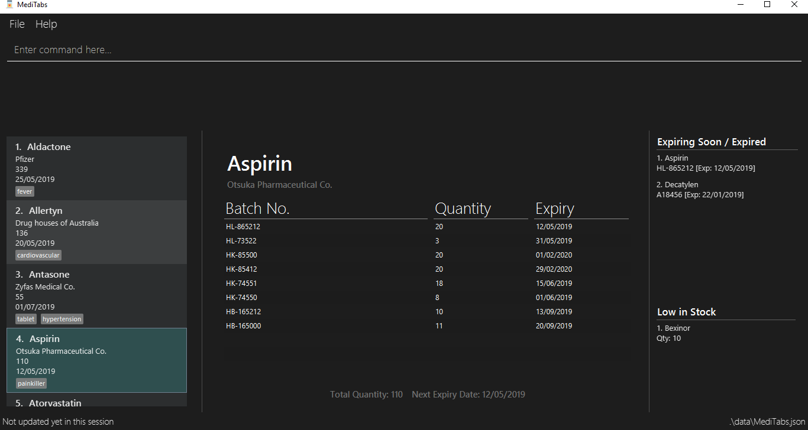

By: Team T12-3 Since: Feb 2019 Licence: MIT
- 1. Introduction
- 2. Quick Start
- 3. Features
- 3.1. Viewing help :
help - 3.2. Adding a new medicine :
add - 3.3. Listing all medicines :
list - 3.4. Locating medicines :
find - 3.5. Editing a medicine :
edit - 3.6. Deleting a medicine :
delete - 3.7. Viewing medicine information page :
select - 3.8. Updating batch records :
update - 3.9. Managing warnings panel :
warning - 3.10. Exporting as CSV file format :
export - 3.11. Printing labels :
label - 3.12. Listing entered commands :
history - 3.13. Undoing previous command :
undo - 3.14. Redoing the previously undone command :
redo - 3.15. Clearing all entries :
clear - 3.16. Exiting the program :
exit - 3.17. Suggested medicine names
[coming in v2.0] - 3.18. Saving the data
- 3.19. Encrypting data files
[coming in v2.0]
- 3.1. Viewing help :
- 4. FAQ
- 5. Commands Summary
- 6. Keyboard Shortcuts
[coming in v2.0]
1. Introduction
MediTabs is for those who prefer to use a desktop app for managing medicine stock taking. This is especially useful for clinics such as family clinics or private clinics to track the amount of medicine they have left available. More importantly, MediTabs is optimized for those who prefer to work with a Command Line Interface (CLI) while still having the benefits of a Graphical User Interface (GUI). If you can type fast, MediTabs can get your medicine stock taking done faster than traditional GUI apps. Interested? Jump to the Section 2, “Quick Start” to get started. Enjoy!
2. Quick Start
-
Ensure you have Java version
9or later installed in your Computer. -
Download the latest
meditabs.jarhere. -
Copy the file to the folder you want to use as the home folder for your MediTabs application.
-
Double-click the file to start the app. The GUI should appear in a few seconds.
 -
Type the command in the command box and press Enter to execute it.
e.g. typinghelpand pressing Enter will open the help window. -
Some example commands you can try:
-
list: lists all medicines in inventory -
addn/Paracetamol c/3M Pharmaceuticals: adds a new medicine named Paracetamol to the inventory -
delete3: deletes the 3rd entry shown in the current list -
exit: exits the app
-
-
Refer to Section 3, “Features” for details of each command.
3. Features
Warnings Panel
-
Low stock of a medicine and expiring medicine will trigger warnings to notify the user that action is required.
-
Warnings will be logged in the warnings panel until action required has been taken.

Terminology
-
List: This refers to the currently displayed list (possibly filtered).
-
Inventory: This refers to the storage containing all medicines that have been added. Display all medicines in the inventory by using the
listcommand. -
Batch: This refers to medicine with the same name, medical properties and manufacturing date. There may be more than one batch of medicine with the same name, but they will have different batch numbers and manufacturing dates. View all batches of a medicine by using the
selectcommand.
Command Format
-
Words in
UPPER_CASEare the parameters to be supplied by the user e.g. inadd n/NAME,NAMEis a parameter which can be used asadd n/Paracetamol. -
Items in square brackets are optional e.g
e.g n/NAME [t/TAG] can be used as `n/Paracetamol t/Popularor asn/Paracetamol. -
Items with
… after them can be used multiple times including zero times e.g.[t/TAG]…can be used as -
Parameters can be in any order e.g. if the command specifies
n/NAME c/COMPANY_NAME,c/COMPANY_NAME n/NAMEis also acceptable.
3.1. Viewing help : help
Format: help
3.2. Adding a new medicine : add
Adds a new medicine to the inventory.
Format: add n/NAME c/COMPANY_NAME [t/TAG]…
Examples:
-
add n/Paracetamol c/3M Pharmaceuticals -
add n/Ibuprofen c/Takeda Pharmaceutical Co. t/New
3.3. Listing all medicines : list
Shows a list of all medicine in the inventory.
Format: list
3.4. Locating medicines : find
Finds medicine whose names contain any of the given keywords and displays them in the list.
Format: find KEYWORD [MORE_KEYWORDS]…
Examples:
-
find n/Sodium
ReturnsLevothyroxine SodiumandNaproxen Sodium. -
find n/Amoxicillin n/Gabapentin c/Johnson
Returns any medicine having namesAmoxicillinorGabapentinor with company name havingJohnson.
3.5. Editing a medicine : edit
Edits an existing medicine in the inventory.
Format: edit INDEX [n/NAME] [c/COMPANY_NAME] [t/TAG]…
Examples:
-
list
edit 2 n/Prednisone c/Johnson & Johnson
Edits the name of the 2nd medicine in the list to bePrednisoneand company to beJohnson & Johnson. -
find Prednisone
edit 1 t/
Remove tags from the 1st medicine in the results of thefindcommand.
3.6. Deleting a medicine : delete
Deletes the specified medicine from the inventory.
Format: delete INDEX
Examples:
-
list
delete 2
Deletes the 2nd medicine in the list. -
find Gabapentin
delete 1
Deletes the 1st medicine in the results of thefindcommand.
3.7. Viewing medicine information page : select
Selects a medicine and loads the information page of the medicine.
Format: select INDEX
Examples:
-
list
select 2
Selects the 2nd medicine in the inventory. -
find Gabapentin
select 1
Selects the 1st medicine in the results of thefindcommand.
3.8. Updating batch records : update
Updates details of a batch of medicine.
Format: update INDEX b/BATCH_NUMBER q/QUANTITY [e/EXPIRY_DATE]
Examples:
-
list
update 2 b/s9c4x9532 q/1000 e/11/2/2020
Updates quantity and expiry date of batchs9c4x9532in batch records of the 2nd medicine in the list to1000and11/2/2020. -
find Gabapentin
update 1 b/8937v1x7 q/500
Updates quantity of batch8937v1x7in batch records of the 1st medicine in the results of thefindcommand to500.
3.9. Managing warnings panel : warning
Manage the threshold for expiry date and low stock warnings.
Format: warning [e/EXPIRY_THRESHOLD] [s/LOWSTOCK_THRESHOLD]
Examples:
-
warning e/20
Expiry date warning will be triggered 20 days before any medicine expires. -
warning s/10
Low stock warning will be triggered when quantity remaining is less than or equal to 10.
3.10. Exporting as CSV file format : export
Exports the current list shown into CSV file format.
Format: export [FILE_NAME]
Examples:
-
export example
Export the current list shown in the GUI to a CSV file which has the filenameexample. -
export
Export the current list shown in the GUI to a CSV file which has a default file name in this format{Date of export}_{Time of export}.
3.11. Printing labels : label
Outputs label to a PDF file. Label will include name of medicine and standard label template.
Format: label INDEX [FILE_NAME]
Examples:
-
list
label 2
Outputs label PDF file for 2nd medicine in the list with default file namelabel. -
find Gabapentin
label 1
Outputs label PDF file for 1st medicine in the results of thefindcommand with file nameGabapentin.
3.12. Listing entered commands : history
Lists all the commands that you have entered in reverse chronological order.
Format: history
|
Pressing the ↑ and ↓ arrows will display the previous and next input respectively in the command box. |
3.13. Undoing previous command : undo
Restores the inventory to the state before the previous undoable command was executed.
Format: undo
|
Undoable commands: those commands that modify the inventry’s content ( |
Examples:
-
delete 1
list
undo(reverses thedelete 1command) -
select 1
list
undo
Theundocommand fails as there are no undoable commands executed previously. -
delete 1
clear
undo(reverses theclearcommand)
undo(reverses thedelete 1command)
3.14. Redoing the previously undone command : redo
Reverses the most recent undo command.
Format: redo
Examples:
-
delete 1
undo(reverses thedelete 1command)
redo(reapplies thedelete 1command) -
delete 1
redo
Theredocommand fails as there are noundocommands executed previously. -
delete 1
clear
undo(reverses theclearcommand)
undo(reverses thedelete 1command)
redo(reapplies thedelete 1command)
redo(reapplies theclearcommand)
3.15. Clearing all entries : clear
Clears all entries from the inventory.
Format: clear
3.16. Exiting the program : exit
Exits the program.
Format: exit
3.17. Suggested medicine names [coming in v2.0]
When typing fields that include medicine name, a list of suggested medicine names will appear after you input the first letter.
|
Pressing the ↑ and ↓ arrows to select from the generated list of suggestions. |
3.18. Saving the data
Inventory data is saved in the hard disk automatically after any command that changes the data.
There is no need to save manually.
3.19. Encrypting data files [coming in v2.0]
{explain how the user can enable/disable data encryption}
4. FAQ
Q: How do I transfer my data to another Computer?
A: Install the app in the other computer and overwrite the empty data file it creates with the file that contains the data of your previous MediTabs folder.
5. Commands Summary
-
Add
add n/NAME c/COMPANY_NAME [t/TAG]…
e.g.add n/Paracetamol c/3M Pharmaceuticals t/Popular -
Clear :
clear -
Delete :
delete INDEX
e.g.delete 3 -
Edit :
edit INDEX [n/NAME] [c/COMPANY_NAME] [t/TAG]…
e.g. `edit 2 n/Amoxicillin c/GlaxoSmithKline t/SlowMoving' -
Exit :
exit -
Export :
export [FILE_NAME]
e.g. export Records -
Find :
find CRITERIA [MORE_CRITERIA]…
e.g.find n/paracetamol c/3M -
Help :
help -
History :
history -
Label :
label INDEX [FILE_NAME]
e.g.label 1 Paracetamol -
List :
list -
Redo :
redo -
Select :
select INDEX
e.g.select 2 -
Sort :
sort c/CRITERIA o/ORDER
e.g.sort c/quantity o/ascending -
Undo :
undo -
Update :
update INDEX b/BATCH_NUMBER q/QUANTITY [e/EXPIRY_DATE]
e.g.update 2 b/A030F21 q/1000 e/25/1/2020 -
Warning :
warning [e/EXPIRY_THRESHOLD] [s/LOWSTOCK_THRESHOLD]
e.g.warning e/20 s/10
6. Keyboard Shortcuts [coming in v2.0]
-
Back to input : Shift + Enter
-
To bottom of list : Shift + d
-
To top of list : Shift + u